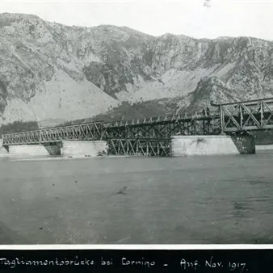

dom 1 nov · dalle 10:00
ll guado del Tagliamento fra Cimano e Cornino... a 109 anni dalla battaglia dell'ottobre-novembre 1917
Domenica 1° Novembre 2026 IL GUADO DEL TAGLIAMENTO FRA CIMANO E CORNINO... A 109 ANNI DALLA BATTAGLIA DELL'OTTOBRE-NOVEMBRE 1917 Escursione fluviale guidata organizzata dal Gruppo Storico Friuli Collinare - Museo della Grande Guerra di Ragogna APS Ritrovo: Ore 10:00, presso il…
 Indicazioni
Indicazioni
- Costi e prenotazioni
- Costo non indicato · Prenotazione non indicata
- Programma
- Programma da verificare. Apri la fonte ufficiale per orari e possibili aggiornamenti.
- In caso di maltempo
- Nessuna indicazione specifica pubblicata.
- Note
- Acquisito automaticamente dalla fonte.
L’EVENTO
Descrizione completa
Domenica 1° Novembre 2026
IL GUADO DEL TAGLIAMENTO FRA CIMANO E CORNINO... A 109 ANNI DALLA BATTAGLIA DELL'OTTOBRE-NOVEMBRE 1917
Escursione fluviale guidata organizzata dal Gruppo Storico Friuli Collinare - Museo della Grande Guerra di Ragogna APS
Ritrovo: Ore 10:00, presso il posteggio sulla riva occidentale del Tagliamento (appena oltre il Ponte fra Cimano e Cornino, lato Cornino, Comune di Forgaria nel Friuli - GPS.: 46.21779, 13.01845)
Itinerario: Ponte di Cimano-Cornino - Isolotto del Clapàt e visita al monumento sommitale - Attraversamento del greto del Tagliamento nel punto dove, il 1° novembre 1917, il Generalmajor Felix zu Schwarzenberg tentò, con i suoi uomini, il guado del fiume - Esplorazione in acqua nella regione fluviale circostante l'Isolotto del Clapàt.
Elementi principali di interesse: Attività di escursionismo fluviale storico sul teatro di una delle più importanti battaglie della ritirata di Caporetto, che nel novembre del 1917 portò le forze austro-ungariche e successivamente tedesche a varcare la linea difensiva tenuta dal Regio Esercito sul maggior fiume friulano e ad avanzare verso il Piave. Durante l'escursione si leggeranno, contestualizzandoli sul terreno, alcuni inediti passi tradotti delle memorie redatte dal Generalmajor Felix zu Schwarzenberg, comandante della 55^ Divisione di Fanteria imperiale e regia protagonista dello sfondamento, nonché unico ufficiale generale che all'epoca volle tentare di persona l'attraversamento a nuoto del Fiume Tagliamento fra Cimano e Cornino. Durante l'escursione si visiteranno le principali vestigia e testimonianze monumentali risalenti o connesse con la Prima Guerra Mondiale, presenti in loco.
Durata complessiva (soste incluse): 3:30-4:00 ore circa, inclusi preparativi e soste di visita. L'attività impegna metà giornata (rientro alle auto previsto per le 13:30-14:00 circa).
Difficoltà: Itinerario di escursionismo fluviale in ambiente non alpinistico, che richiede passo sicuro nel movimentarsi sul greto sassoso del Fiume Tagliamento e buona confidenza con l'acqua.
Allenamento richiesto : Moderato (4 km circa di percorso, con 2 km circa di progressione in greto fluviale).
Equipaggiamento richiesto: solide calzature sportive con cui camminare in acqua su fondo sassoso (scarpa da torrentismo, da trekking o scarponi da escursionismo), costume da bagno, snack (consigliato frutta e barrette), borraccia d’acqua, eventuale contenitore stagno per discesa fluviale (la guida può portare nei proprii contenitori stagni gli snack e le chiavi auto dei partecipanti, ma solo il proprio telefonino/trasmettitore satellitare per fotografie ed eventuali necessità), asciugamani per asciugarsi a fine escursione. L'organizzazione fornisce a ogni partecipante: casco protettivo, muta in neoprene, calzari in neoprene, guanti, giubba di aiuto al galleggiamento.
Guida: dott. Marco Pascoli (Esperto specializzato sui siti della Prima guerra mondiale / Accompagnatore di Media Montagna Collegio Guide Alpine FVG / International Mountain Leader UILMA / Ricercatore storico e autore / Fondatore del Museo della Grande Guerra di Ragogna)
Partecipazione gratuita. Numero massimo di partecipanti: 10 persone Le iscrizioni si raccolgono in ordine cronologico di prenotazione ai contatti sottostanti
In caso di condizioni meteo o di portata idrica del fiume non coerenti con un'ottimale gestione dei rischi durante l'attività, l'iniziativa sarà rinviata ad altra data.
Prenotazione gentilmente richiesta, ai seguenti contatti:
MAIL: info@grandeguerra-ragogna.it
WhatsApp: 347 3059719
IL PROGRAMMA
Programma e orari
Appuntamenti raccolti dalle fonti elencate. Dove manca un orario, non è ancora disponibile in questa scheda.
Programma pubblicato
- Ore 10:00, presso il posteggio sulla riva occidentale del Tagliamento (appena oltre il Ponte fra Cimano e Cornino, lato Cornino, Comune di Forgaria nel Friuli - GPS.: 46.21779, 13.01845)
- 3:30-4:00 ore circa, inclusi preparativi e soste di visita. L'attività impegna metà giornata (rientro alle auto previsto per le 13:30-14:00 circa).
INFORMAZIONI UTILI
Prima di partire
- Controllare la fonte prima di partire.
ORGANIZZAZIONE